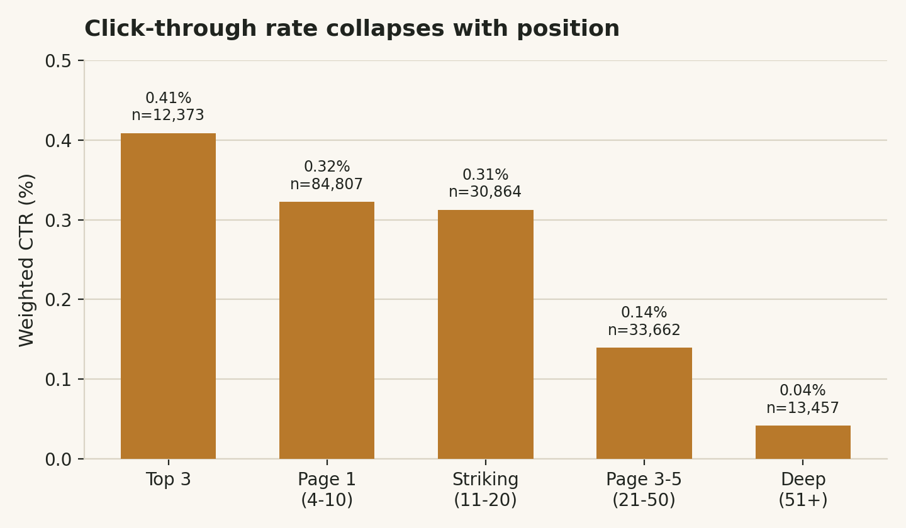
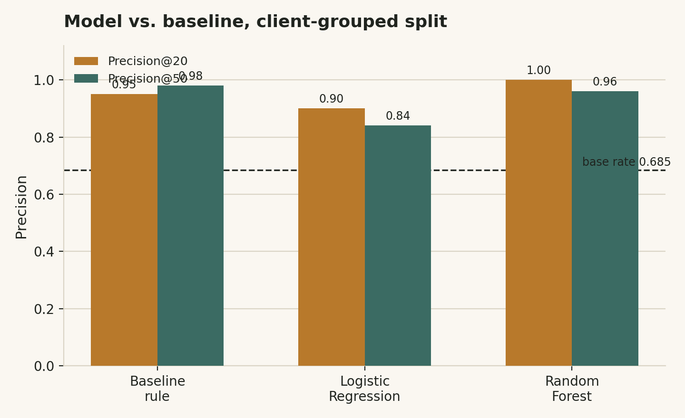

A CTR opportunity-scoring study on 9.84 million rows of real search-performance data, where a transparent rule holds its own against a learned model, and one data-quality bug nearly wasn't caught.
Which pages are earning fewer clicks than their search ranking should predict, and how confidently can that gap be ranked for a content team with limited review time? Built on FlyRank's internship warehouse, 9.84 million daily search-performance rows across pseudonymized clients for March 2026; this study defines a page's opportunity as the gap between its actual click-through rate and the average CTR of pages at a comparable search position. A transparent rule-based baseline and two learned classifiers (logistic regression, random forest) were each validated against a held-out set of clients the model never trained on, guarding against a model that memorizes a client's quirks rather than a real pattern. Under that honest split, the transparent baseline matched or beat the random forest at the widest review size, while the forest only edged ahead at a narrower, more selective cutoff; a genuinely mixed result, not a clean win for complexity. The output is a ranked, reason-coded action queue intended as a weekly shortlist for human content reviewers, not an autonomous system, alongside an honest account of a real data-quality bug this study found and corrected along the way.
A content reviewer sitting down on a Monday morning has a few hours and a site with over a hundred thousand pages. Some of those pages rank well but earn almost no clicks; a title that doesn't match what searchers expect, a snippet that undersells the page, or a spot where a competing result quietly took the click. Others rank well and click well: nothing to touch. The reviewer's real constraint isn't finding problems, it's finding the right few problems first, out of far too many pages to check by hand.
This study asks a narrower, checkable version of that question: given a page's search position and its click-through rate, can the size of the gap between "what CTR this position should earn" and "what CTR this page actually earns" be ranked well enough to serve as that reviewer's shortlist? And critically, does a learned model actually rank that gap better than a rule a human can read in one sentence?
This study draws on FlyRank's internship data warehouse, released as pseudonymized Parquet on Hugging Face. The full release spans 104 clients, 519,606 content items, and 78,835,655 daily performance rows from 2025-01-27 through 2026-06-30. All identifiers (client, content, keyword, URL) are scrambled hashes; no raw client names, domains, URLs, or query text are present anywhere in the release or in this study.
The analysis here uses a single mid-panel month, March 2026 (2026-03-01 through 2026-03-31), 9,841,378 rows, deliberately avoiding the release's final month, which is reserved as a sealed evaluation window by the data provider's own guidance and should never be used to develop label logic.
Two tables were joined: fact_content_daily_performance (the daily search-metric fact table) and dim_content (static content metadata). Rows were aggregated to one row per content item per month, requiring at least 100 impressions to qualify, low-traffic pages produce CTR estimates too noisy to trust.
Explicitly excluded: FlyRank's own product-decision flags (health score, priority score, action type) were never used as inputs, including them as features would let a model simply learn to reproduce an existing rule rather than discover anything new. Engagement/GA4 fields were also excluded from the final feature set: in this slice, only 413,966 of 9,841,378 rows (4.2%) had real GA4 coverage, too thin to build a reliable feature on.
One row is one content item's aggregated activity within March 2026. To build a genuine forward-looking test rather than a same-window measurement, the month was split at its midpoint: features are built only from the first 15 days; the label is defined on the second 15 days, whether a page's second-half CTR fell below the second-half average CTR for its position tier (five bins: positions 1–3, 4–10, 11–20, 21–50, and 51+, assigned using each page's first-half position only, so the tier assignment itself never peeks at the outcome window).
Before position could be trusted as a feature, this study found that 2.7% of impression-rows (264,737 of 9,841,378), affecting 38.7% of content items (68,425 of 176,738), had a mathematically impossible position value, days where gsc_sum_position stayed flat while gsc_impressions spiked 20–100×, producing an average position under 1 (impossible, since rank 1 is the best real position). One example page's position moved from an impossible 0.67 to a corrected 8.08 once these rows were excluded; a real, page-level effect, not a rounding curiosity. All position calculations in this study use only rows where gsc_sum_position ≥ gsc_impressions, the condition that must hold for any genuine average position.
Five first-half-only inputs: first-half impressions, first-half average position (impression-weighted, bug-corrected), first-half CTR, the first-half CTR gap against tier average, and content age in days, plus content type as a categorical feature. The transparent baseline scores each page as underperforming × ctr_gap × impressions, a plain multiply of readable conditions, with no fitted weights, computed using only first-half data so the baseline is never peeking at the outcome it's being compared against.
Pages from the same client were kept strictly on one side of the split (GroupShuffleSplit on client, not a plain random split), random splits let a model memorize per-client quirks rather than learn a pattern that generalizes to clients it has never seen. As a direct test of the evaluation harness itself, the label-defining column (second-half CTR) was deliberately re-added as a feature: precision@20 jumped from 0.950 to a perfect 1.000, confirming the harness correctly detects leakage when it's present, the necessary check before trusting its absence elsewhere.

Click-through rate falls roughly 10× from the top position tier to the deepest one, the pattern that makes tier-relative comparison necessary in the first place; a flat CTR threshold would unfairly flag every deep-tier page and miss real problems at the top.
All three methods clear the 0.685 base rate by a wide margin; real signal, not luck. The result is mixed, not a clean win for the learned model:
| Method | Precision@20 | Precision@50 | Base rate |
|---|---|---|---|
| Baseline rule | 0.95 | 0.98 | 0.685 |
| Logistic Regression | 0.90 | 0.84 | 0.685 |
| Random Forest | 1.00 | 0.96 | 0.685 |
Client-grouped split — 28 training clients, 10 held-out test clients, unseen during training.

Random Forest wins the narrower, most-selective cutoff; the transparent baseline wins the wider one. Neither result is discarded in favor of the other.
The transparent baseline beats the random forest at precision@50. Random Forest's top features were nearly evenly split (first-half position, impressions, and CTR gap each near 0.21–0.22 importance, content age at 0.14), no single feature dominated, the opposite signature of a leaked feature. The model's highest error rate was in the 4–10 position tier (29.4%), and its most confident wrong calls were pages with near-zero first-half CTR that genuinely recovered in the second half; first-half zero is inherently ambiguous, and that ambiguity is exactly where the model struggled most.
Why the scores are this high: pages already underperforming in the first half were underperforming again in the second half 81.4% of the time, versus 44.7% for pages that weren't gapping. CTR underperformance is a genuinely persistent, observable pattern within a month, which is the honest explanation for the high precision scores, not an artifact of the test.
A second experiment compared a deliberately naive random split (allowing the same client's pages in both train and test) against the honest grouped split, on the Random Forest alone. Disclosed limitation: this comparison used a reduced 4-feature set (the CTR-gap feature was inadvertently dropped from this run) and is not directly comparable, number-for-number, to the 5-feature table above.
| Split | Precision@20 | Precision@50 | Base rate | Test clients |
|---|---|---|---|---|
| Random (naive) | 0.90 | 0.92 | 0.701 | 33 |
| Grouped by client (honest) | 0.95 | 0.90 | 0.685 | 10 |
The grouped split did not score uniformly lower, which is itself informative — see Limitations for the honest read on why.
Single month. Every result here comes from March 2026 alone. Nothing has been tested against a different month, a different season, or the sealed final-month holdout. Treat every number as "observed in March 2026," not as a stable year-round constant.
Small held-out group. The honest grouped split holds out only 10 whole clients. A precision@K estimate built from 10 groups carries real sampling variance, a different random seed could shift these numbers by several points. This is a genuine limit of one month's client count, not a hidden flaw.
Decision-support, not causal. Nothing in this study shows that rewriting a title or refreshing a page causes a CTR improvement, that requires a controlled experiment this cross-sectional data cannot provide. The correct reading of every ranked page is "worth a human look," not "confirmed broken."
Content type barely matters. In the validated model, content-type categories contributed less than 0.001 importance each, this study does not support claims that certain content types inherently underperform.
Methodology consistency. As disclosed above, the two model-comparison tables in this paper used slightly different feature sets across separate notebook runs. Treat the 5-feature table (Results, first table) as the primary reported comparison.
Of 101,424 scored pages, 68,652 (67.7%) cleared the CTR-gap threshold and were ranked into three reason-coded segments:
Auto-rewriting titles or metadata without human review; the score identifies candidates, not verified problems. Any action based on this single month without re-confirming the pattern holds in the current month. Merging or pruning pages on this queue alone, without the consolidation check above. Treating content-type differences as a rule, given their near-zero validated importance.
Re-run the position-validity check monthly; a meaningful shift from the 2.7% baseline signals the underlying data pipeline may have changed. Re-run the grouped-split precision@K comparison monthly; a drop well below the 0.685–0.701 range seen here signals the tier-CTR pattern may no longer hold. Re-validate against a new month before trusting this queue past the month it was built on.
Every step in this study, the data contract, the baseline, the model, the validation audit, and the action playbook, is a runnable, committed notebook in the project repository. All random processes use a fixed seed (random_state=42) for exact reproducibility.
work/notebooks/w03_data_contract.ipynb — data contract and verification querieswork/notebooks/w04_baseline_score.ipynb — transparent baseline and signal checkswork/notebooks/w05_model.ipynb — model training and baseline comparisonwork/notebooks/w06_validation_audit.ipynb — grouped-split audit and leakage checkswork/notebooks/w07_action_playbook.ipynb — the ranked, reason-coded action queuework/notebooks/capstone.ipynb — this paper's source notebook